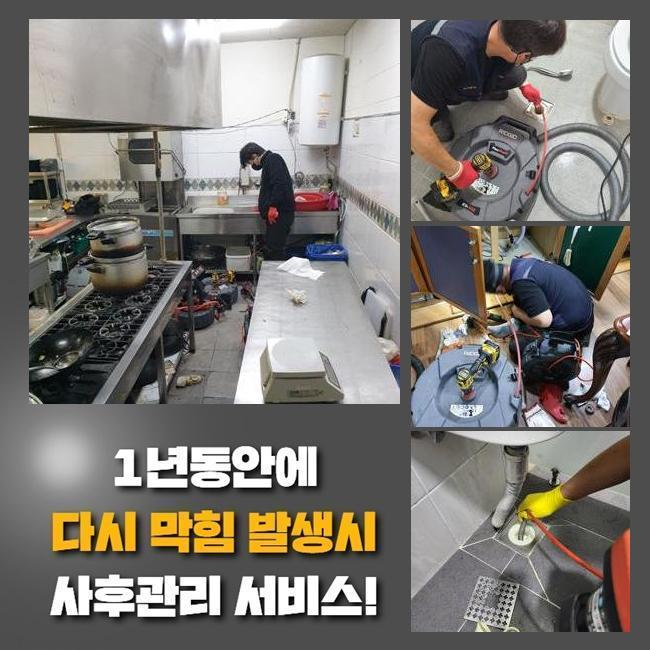
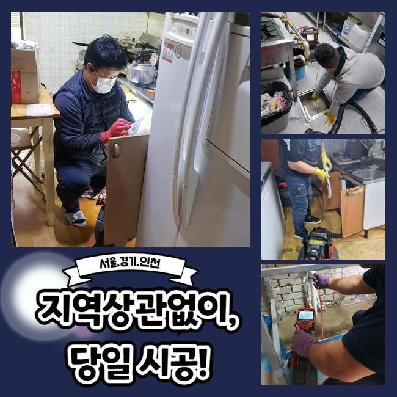
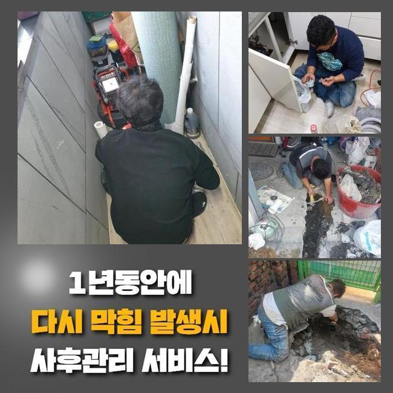
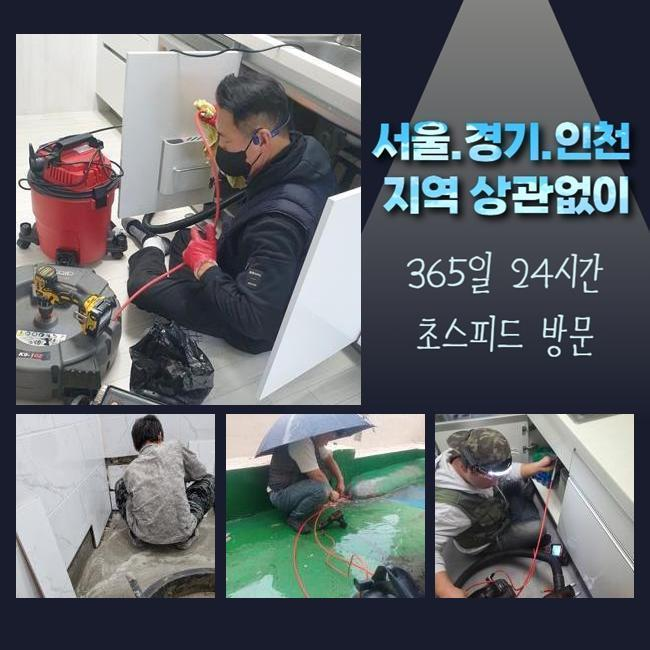
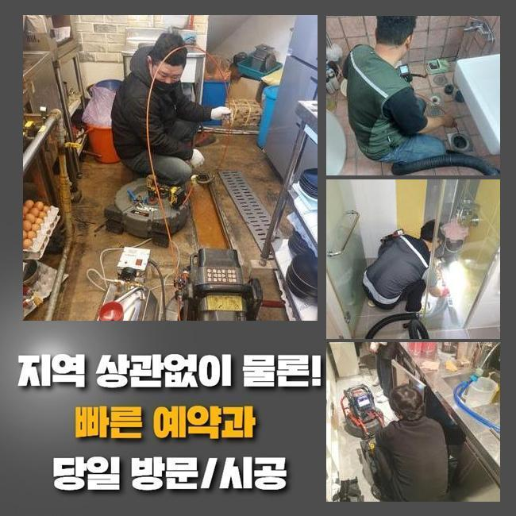
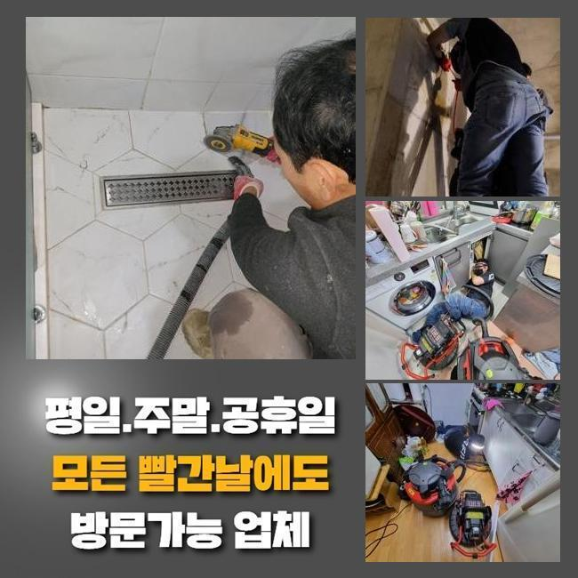
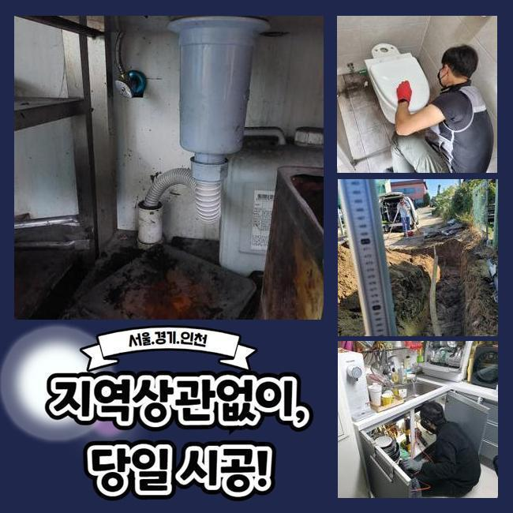

🏠 종로 구기동하수구뚫음 와룡동 하수구뚫는곳 설비업체
용인 하수구막힘 전문 시공 후기

📋 작업 개요
- 위치: 용인
- 서비스 유형: 하수구막힘, 배관막힘, 역류해결, 뚫는업체, 배관청소
- 작업 일시: 2025. 4. 7. 19:27
- 업체명: 하수구수사대 (010-5615-2118)
🔍 문제 상황
종로 구기동하수구뚫음 와룡동 하수구뚫는곳 설비업체
저희업체는 일주일 전 상가건축물의 통수장애를 해결할 목적으로 방문을 드렸는데요
상가관리를 도맡았던 의뢰자의 설명을 듣고 저희전문진은 상업시설의 화장실쪽에서 계속적인 이물질 역류 막힘들을 시정해내고자 도착했죠
고객의 경우 고착화가 진행되면서부터 이용자로부터 민원까지 수용해야했던 상황이였어요
지금의 사태를 조속히 조치해보고자 저희전문진은 도착하고서 문제의 장소를 살폈죠
꾸준히 축적되는 오염물들이 관로를 좁혀버린걸 체크하고 조속하게 시정했는데요
지금까지의 데이터로 추측하니 해당 이물은 일반적으로 공동배수관에서 목격되기에 오늘과 같은 문제들이 야기되지 않았나 예상했어요
그러므로 빠르게 외부라인으로 이동해서 이상이 있는 관로들의 지점을 파악하기위하여 검수를 시작했는데요
탐지장치를 운용하여 배관의 스팟을 특정시켰고 개폐구를 여니 오염상태는 심각수준이였어요
수전 등에 쌓이게된 오염물의 찌꺼기들과 바깥에서 유입된 폐기물들까지 섞여있던 상태였어요

🔎 원인 분석
💡 전문가 진단: 정밀 진단 장비를 사용하여 슬러지의 고착 여부를 판명하고 타격/세척 작업을 실시했습니다.
이러한 배수정체를 시정하기위하여 서둘러 올바른 대응을 하게 되었고 상가건축물의 시설을 지속적으로 쓸 수 있게 했죠
일정 구간들에 이물들이 쌓인다면 많은 통수오류를 유발시키기에 해결들을 미루지않는게 요구됩니다
진단을 실시하니 잔해물이 넓은 범위에 자리한것을 체크했죠
폐기물들은 지금까지 누적될 시서 고착물로 굳어버렸죠
고착화와 이물퇴적으로 인하여 배수정체가 발생된거라고 생각했어요
그러므로, 다양한 기계를 써서 배수구를 깔끔하게 만들기로 했습니다
다양한 기계를 써서 하수관을 청소하고자하면 고압노즐분사가 필요하죠
만일 메인관로에 이물들이 존재한다면 보통의 방식으론 개선이 안될수 있는데요
그렇기에, 고압노즐을 이용해 실용적으로 기름때들을 배출시키는게 중요하겠습니다
컨디션을 회복시키면 배수관을 청결하게 유지하게되고 결함들이 쌓이는 것을 선제적으로 예방하게 됩니다
이 부분은 염두에 두고, 배수관을 시공하는 시점에는 고압노즐분사를 고려하는것 또한 권장드립니다

🔧 작업 과정
마찬가지로 잔해가 누적되지 않을 정도로 때에 맞춰 청소해주는게 대두되고 알맞게 대응한다면 수월하게 막힘들을 해결할 수 있습니다
그러므로 오류가 발생했을 때는 안전한 해결책이 중요하고 전문가들의 손길로 흐름에 문제없는 배수환경을 수립하는게 실시되야했습니다
관리해주는게 먼저겠지만 전문인과 함께하여 배관을 청결하게 만들어주는게 개선에 제일 가까운 방책으로 다가올 수 있죠
모든 과정을 빈틈없이 진행시키기 위해선 구조적인 부분과 특성들을 알고 있어야 하죠
각 관로들은 이런저런 소재들로 설치되며 시간이 흘러 내식성이 떨어지므로 쎈 압력들을 가해주는건 좋지않죠
배수관의 컨디션과 위험요소들을 인지하고 알맞은 방식을 통해야하겠습니다
해당 사항들을 지켜준다면 고압수청소로 완성도 높은 결과물을 경험할 수 있죠
운용했던 석션기기는 압차를 사용해 관로의 잔해물을 효율적으로 제거했습니다
석션기에 흡입된 모래등의 잔재들을 보게되었고 내시경도구를 투입시켜 심층부까지 확인하니 흡착물들이 상당해 배수상황에 애를 먹고 있었어요
해당 결함들을 파악하고 타 방법을 실시해 저희들은 해당 장소에서 발생한 통수장애를 빠르고 효율적으로 해결해주며 매립된 형상과 오염물의 위치들을 파악해보고 청소를 실시해 온전한 하수관컨디션을 확보했습니다
이런 현상은 보통 아직 이물들이 깊은곳에 쌓인까닭에 축적되는 증상들로 통로가 좁아져 유수흐름들이 중단되는 양상들이 우리 앞에 다가옵니다
이럴땐 전문업체들의 도움으로 내시경을 사용해 심층부까지 검수하고 근간이 되는 기조요소들을 없애주는것이 이행되어야해요
고압수청소를 진행시키면서 저희전문진은 타겟위치로 호스들을 투입시켰고 초입의 포인트에선 고착물질들이 한꺼번에 빠지는걸 보았습니다
이와 달리 기름덩어리들이 위치해있는 3미터 포인트에선 이물들의 양상을 보고 노즐의 강도들을 주시하며 청소들을 실시했습니다
이물들의 고착정도들이 심각하여 온수 이러한 작업들을 실시하였는데 안전관련 수칙을 지켜내며 기름슬러지를 수습했습니다
막히는 사례는 예고없이 등장해 때론 감당하기 힘든 고충을 불러일으킵니다
하수정체는 대다수 이물들이 문제가되서 발생되기에 한시라도 빨리 배수정체를 해결하는게 좋습니다


✅ 작업 완료
고객의 고충을 덜고자 신속하게 조치하겠습니다
통수오류를 조사하고 알맞는 방식을 선정해 시정에 심혈을 기울이죠
신속한 대응들이 중요하므로 장기간 내버려두는 일은 없어야해요
전문진의 손길이 필요할땐 언제라도 연락주세요!
결함들이 발생하면 조속히 대응하여 안정적이고 청결한 배수환경들을 지켜낼게요




⚠️ 하수구 배관 막힘 예방 및 관리 가이드
- ✅ 머리카락, 비닐, 물티슈 등 물에 분해되지 않는 이물질은 하수구 유입을 절대 금지해 주세요.
- ✅ 하수구 거름망을 씌우고 모여진 이물질은 주기적으로 쓰레기통에 바로 비워주셔야 합니다.
- ✅ 배관 노후가 심할 경우 이물질이 더 쉽게 걸리므로 주기적인 배관 세척(고압세척 등)을 권장합니다.
- ✅ 작업 후 1년 이내 재발 시 하수구수사대에서 무상 A/S 보증 서비스를 제공합니다.
💡 핵심 정리
- 확실한 장비 작업(내시경 점검 및 샤프트 스케일링)으로 원인을 뿌리 뽑습니다.
- 작업 후 1년 이내에 동일한 부위 재발 시 100% 무상 A/S 서비스를 보장합니다.
- 서울 · 경기 · 인천 전 지역에 24시간 언제든 긴급 출동할 수 있도록 항시 대기 중입니다.
❓ 자주 묻는 질문 (FAQ)
🚨 용인 하수구막힘 문제로 고민이신가요?
정확한 원인 진단과 확실한 시공으로 재발 없는 해결을 약속드립니다.
24시간 긴급 출동 | 서울 · 경기 · 인천 전지역 | 1년 내 재발 시 무상 A/S